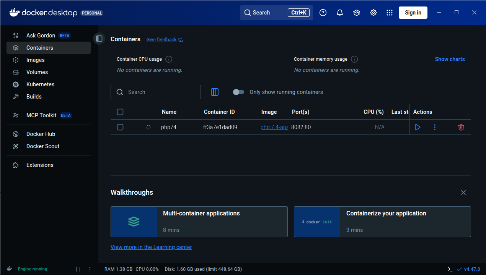
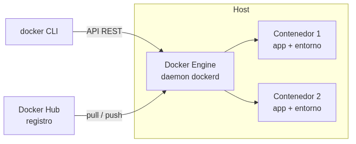
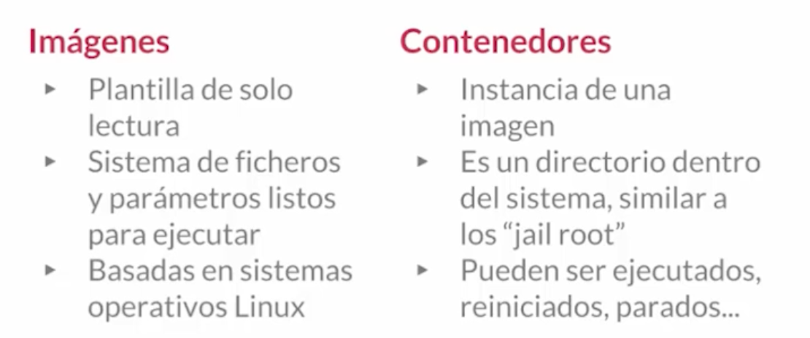
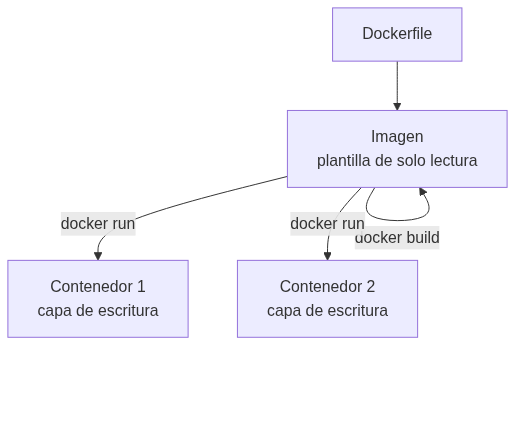
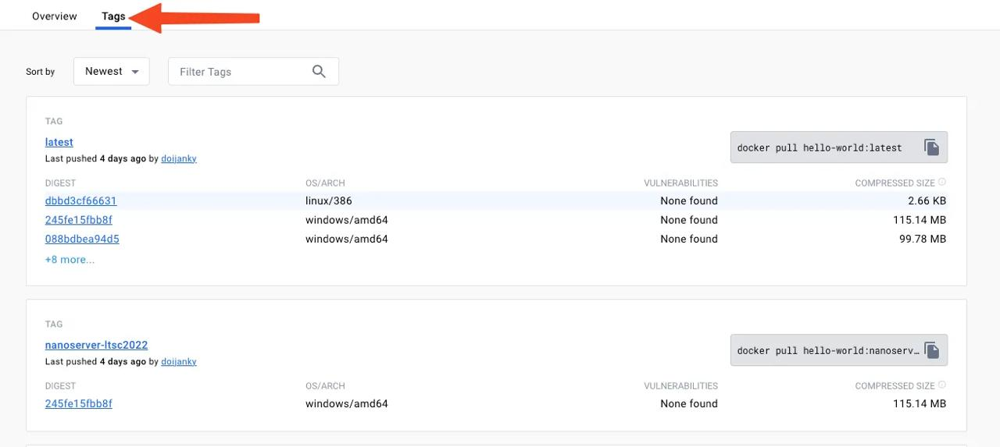
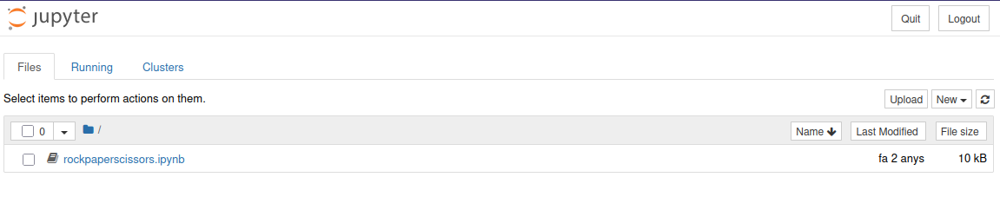
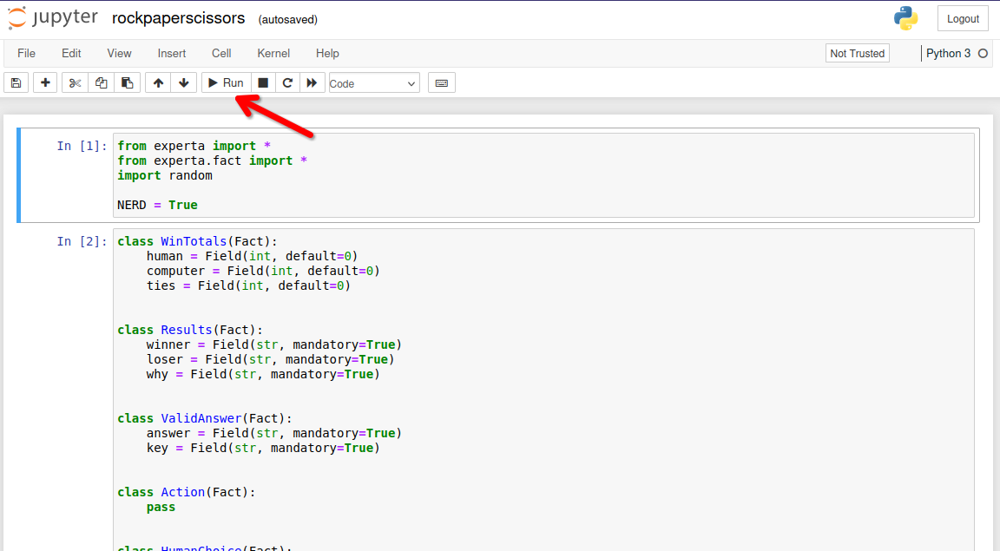
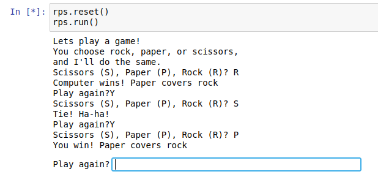

UD00 — Presentación del módulo y curso rápido de Docker¶
Unidad 0 · 6 h · semanas 1-2 (1 al 8 de octubre)
Unidad transversal de presentación y arranque del curso. No tiene prueba escrita: el entorno de trabajo es requisito para el resto del módulo, y el entregable del Taller 1 se marca como hecho / no hecho.
1. Introducción¶
Esta primera unidad tiene un doble objetivo. Por una parte, situar el curso: qué es el curso de especialización en Inteligencia Artificial y Big Data, qué se va a aprender en el módulo 5071 Modelos de Inteligencia Artificial y cómo se va a evaluar. Por otra, dejar listo el entorno de trabajo: sin herramientas fiables y reproducibles, cualquier práctica de IA se convierte en una lucha contra configuraciones que no funcionan. Por eso el núcleo técnico de la unidad es un curso rápido de Docker, la tecnología que nos permitirá ejecutar el mismo entorno de Python y Jupyter en cualquier equipo.
La idea que sostiene la unidad
La IA se hace con entornos reproducibles: si cada alumno tiene una configuración distinta, los resultados no son comparables. Docker resuelve ese problema empaquetando el entorno completo en un contenedor.
2. Resultados de aprendizaje y objetivos¶
La UD00 es transversal (no desarrolla un RA propio del módulo): sirve de nivelador tecnológico y de presentación. Las competencias que trabaja se asocian a la ética y el cuidado del entorno de trabajo (RA7-i) y a los hábitos de trabajo del curso.
| Objetivo | Descripción |
|---|---|
| O1 | Describir el curso de especialización IA y Big Data y el papel del módulo 5071 en él. |
| O2 | Explicar cómo se evalúa el módulo (criterios, calificación, recuperación). |
| O3 | Identificar el entorno de trabajo del curso: Aules, web, Python, Jupyter y Docker. |
| O4 | Diferenciar contenedor, imagen, volumen y red, y explicar qué ventajas aporta Docker frente a las máquinas virtuales. |
| O5 | Crear, ejecutar, detener y eliminar contenedores con docker run. |
| O6 | Escribir un Dockerfile sencillo y levantarlo con docker build. |
| O7 | Orquestar varios servicios con Docker Compose y conservar datos con volúmenes. |
| O8 | Levantar un contenedor de prácticas con Jupyter y las bibliotecas del curso. |
Nota sobre la tabla anterior.
¿Por qué no tiene RA propio?
El currículo del RD 279/2021 desarrolla 6 resultados de aprendizaje para el módulo 5071 (RA1-RA6). La UD00 es una unidad de presentación y puesta en marcha que prepara el terreno para esas unidades: sin ella, los RA1-RA6 perderían horas en configurar entornos.
3. Presentación del curso y del módulo (RA7-i)¶
3.1 El curso de especialización en IA y Big Data¶
El curso de especialización en Inteligencia Artificial y Big Data es un título de Grado Superior (familia Informática y Comunicaciones) de 600 horas y 36 ECTS establecido por el RD 279/2021. Su competencia general es programar y aplicar sistemas inteligentes que optimizan la gestión de la información y la explotación de datos masivos, garantizando la seguridad y la ética.
Se organiza en cinco módulos:
| Código | Módulo | Horas en CV |
|---|---|---|
| 5071 | Modelos de Inteligencia Artificial | 90 |
| 5072 | Sistemas de aprendizaje automático | 90 |
| 5073 | Programación de Inteligencia Artificial | 210 |
| 5074 | Sistemas de Big Data | 90 |
| 5075 | Big Data aplicado | 120 |
El acceso se realiza desde titulaciones de grado superior de la familia de informática y otras relacionadas (ASIR, DAM, DAW, telecomunicaciones, mecatrónica y robótica industrial).
Una frase para recordar
Este curso enseña a construir sistemas inteligentes (5071, 5072, 5073) y a tratar datos a gran escala (5074, 5075). El módulo 5071 es la base conceptual de los sistemas de IA.
3.2 El módulo 5071 Modelos de Inteligencia Artificial¶
El módulo 5071 se imparte a lo largo de todo el curso (90 horas, 3 horas semanales, 4 ECTS) y desarrolla 6 resultados de aprendizaje (RA1-RA6), más el RA7 de proyecto integrador transversal:
| RA | Qué aprenderás |
|---|---|
| RA1 | Caracterizar sistemas de IA y relacionarlos con la eficiencia operativa |
| RA2 | Utilizar modelos de IA para implementar sistemas de resolución de problemas |
| RA3 | Relacionar el procesamiento del lenguaje natural (PLN) con sus aplicaciones |
| RA4 | Analizar sistemas robotizados y evaluar su diseño e implementación |
| RA5 | Aplicar sistemas expertos y valorar los controladores inteligentes |
| RA6 | Aplicar principios legales y éticos (privacidad, sesgos, normativa) |
| RA7 | Proyecto integrador transversal de todo el curso (definición → datos → modelos → Big Data → comunicación) |
3.3 El proyecto integrador (RA7)¶
El RA7 es un proyecto común a todo el curso de especialización: se desarrolla en equipos durante el bloque final (semanas 25-29) y en él confluyen todos los módulos del título. El alumnado define un problema, obtiene datos, aplica modelos de IA, integra soluciones de Big Data, comunica resultados y evalúa críticamente el trabajo realizado.
Es transversal por dos razones: 1. Lo imparten todos los docentes del curso, no solo el del 5071. 2. La nota se consensúa entre el equipo docente, valorando la contribución de cada miembro.
Implicación para este módulo
El contenido del 5071 (UD00-UD06) finaliza a finales de abril porque las últimas semanas del curso se dedican por completo al proyecto integrador. Desde el primer día, el proyecto te permitirá aplicar lo aprendido en este módulo.
4. Cómo se evalúa el módulo¶
La evaluación se rige por la Orden 8/2025 de la Comunitat Valenciana (modificada por la Orden 5/2026). Lo que debes saber desde el primer día:
Los pesos de cada RA, la nota mínima y el reparto 40/60 están en la página de información importante, que es la referencia única: si algún día cambian, cambian allí. Aquí van las reglas que conviene tener claras desde el primer día y que no dependen de los pesos:
| Aspecto | Regla |
|---|---|
| Calificación por RA | De 1 a 10, sin decimales (art. 5.1) |
| Evaluación continua | Se pierde al superar el 15 % de inasistencia (asistencia ≥ 85 %) |
| Evaluaciones parciales | Dos parciales informativos (fin del 1.er y 2.º trimestre) |
| Recuperación | Programa individual por cada RA no superado; en junio, solo los RA pendientes |
| Esta unidad (UD00) | No se califica: es requisito. Sus tres entregables (los dos talleres y el notebook) se marcan hecho / no hecho |
Nota sobre la tabla anterior.
Asistencia
Si superas el 15 % de faltas perderás la evaluación continua del módulo (art. 7.3 Orden 8/2025). Es un criterio objetivo, no una decisión del profesor.
Evaluación inicial
Durante el primer mes realizaremos una evaluación inicial o diagnóstica (obligatoria antes de finalizar el segundo mes lectivo). No cuenta para la nota: sirve para conocer tus competencias previas y adaptar el ritmo del curso.
5. Entorno de trabajo del curso¶
| Herramienta | Para qué la usaremos |
|---|---|
| Aules (Moodle de la GVA) | Entrega de tareas, pruebas, avisos y calificaciones |
| Web del curso (mkdocs) | Teoría, ejercicios, talleres y notebooks en el navegador |
| Python + Jupyter | Notebooks de prácticas con las bibliotecas de IA |
| Docker | Entornos reproducibles y el contenedor de prácticas |
| Git (opcional) | Control de versiones de tus proyectos |
Sobre Aules
Aules es la plataforma oficial de e-learning de la Conselleria de Educación, basada en Moodle. Accederás con tu usuario (NIA) y desde ahí se gestionan las tareas del módulo.
El stack de IA del curso¶
Las prácticas se basan en Python con estas bibliotecas:
numpy, pandas, matplotlib, scikit-learn, scikit-fuzzy, nltk, spaCy, torch y experta.
Este stack se ejecutará en un contenedor de prácticas de IA que montaremos en el taller 2 de esta unidad.
5.2 Instalar Docker¶
Antes de nada, Docker tiene que funcionar en tu máquina. Estos pasos están probados en el aula.
Instalación en Ubuntu¶
https://www.digitalocean.com/community/tutorials/how-to-install-and-use-docker-on-ubuntu-20-04-es
Requisitos previos:
- apt-transport-https: permite que el administrador de paquetes transfiera datos a través de https
- ca-certificates: permite que el navegador web y el sistema verifiquen los certificados de seguridad
- curl: transfiere datos (similar a wget)
- software-properties-common: agrega scripts para administrar el software
1 | |
Agregamos repositorio
1 2 3 4 5 6 7 8 9 10 | |
Por defecto, el comando docker solo puede ser ejecutado por el usuario root o un usuario del grupo docker, que se crea automáticamente durante el proceso de instalación de Docker.
Para evitar escribir sudo al ejecutar el comando docker, agregue su nombre de usuario al grupo docker:
1 2 3 4 5 6 7 | |
Docker Desktop¶
¿Qué es Docker Desktop?¶
Es la aplicación oficial de Docker que te da una interfaz gráfica (GUI) para manejar contenedores, además de la línea de comandos.
¿Para qué sirve?¶
- Gestión visual: Ver contenedores, imágenes y volúmenes de forma gráfica
- Configuración fácil: Ajustar recursos (CPU, RAM) con sliders
- Monitorización: Ver en tiempo tiempo real qué está pasando

Compatibilidad por Sistema Operativo¶
🪟 Windows
- Windows 10/11 64-bit (versiones Home, Pro, Enterprise, Education)
- Requisitos importantes:
- Habilitar WSL 2 (Windows Subsystem for Linux)
- Virtualización activada en BIOS/UEFI
- Windows Home necesita WSL 2, Pro/Enterprise puede usar Hyper-V
🍎 macOS
- macOS 12 Monterey o superior
- Tipos de chip:
- Apple Silicon (M1, M2, M3, etc.)
- Intel con procesador de 2010 o más nuevo
- Necesita macOS actualizado
🐧 Linux (versión nativa)
- Distribuciones compatibles:
- Ubuntu 20.04 LTS o superior
- Debian 11 o superior
- Fedora 36 o superior
- Arch Linux (y derivados)
- Requisitos: kernel 5.10+, systemd, 64-bit
Guía Rápida de Instalación¶
Windows:
- Descarga desde docker.com/products/docker-desktop
- Ejecuta el instalador
.exe - Sigue el asistente (marca "Use WSL 2" si tienes Windows Home)
- Reinicia cuando termine
- ¡Listo! Docker se inicia automáticamente
macOS:
- Descarga desde la web oficial
- Arrastra Docker.app a la carpeta Applications
- Ejecuta desde Launchpad
- Autoriza con contraseña del sistema
- Espera a que configure todo (puede tardar unos minutos)
Linux (Ubuntu/Debian ejemplo):
1 2 3 4 5 6 7 8 | |
Problemas con Ubuntu 24.04
Si tienes problemas con Ubuntu 24.04, yo me he encontrado dos:
-
Problema de permisos
1 2 3
... S'estan processant els activadors per a desktop-file-utils (0.27-2build1)… N: La baixada es duu a terme fora de l'entorn segur com a root ja que el fitxer «/home/ubuntu/docker-desktop-4.27.2-amd64.deb» no és accessible per l'usuari «_apt». - pkgAcquire::Run (13: Permission denied)Lo he resuelto cambiando los permisos del deb:
1 2 3 4
# Change ownership of the file to make it accessible sudo chown _apt:root /home/ubuntu/docker-desktop-4.27.2-amd64.deb # Or alternatively, change permissions to make it readable sudo chmod 644 /home/ubuntu/docker-desktop-4.27.2-amd64.deb -
Lanzas Docker-desktop, aparece el icono, pero desaparece y la aplicación no incia: Parece un problema con un cambio en Ubuntu 24.04 que he resuelto con la información de este post:
1 2
sudo sysctl -w kernel.apparmor_restrict_unprivileged_userns=0 systemctl --user restart docker-desktopEn algunos casos parece que la solución anterior solo sirve hasta que reinicias, si es así, prueba esto también:
Crea un nuevo fichero:
1sudo nano /etc/apparmor.d/opt.docker-desktop.bin.com.docker.backendEscribe dentro el siguiente contenido:
1 2 3 4 5 6 7 8 9 10
abi <abi/4.0>, include <tunables/global> /opt/docker-desktop/bin/com.docker.backend flags=(default_allow) { userns, # Site-specific additions and overrides. See local/README for details. include if exists <local/opt.docker-desktop.bin.com.docker.backend> }Reinicia el servicio
apparmor.service:1sudo systemctl restart apparmor.service
Ventajas docker desktop (GUI) vs Línea de Comandos (CLI)¶
✅ Ventajas de Docker Desktop:
- Más fácil para empezar - Ideal para principiantes
- Todo integrado - No necesitas instalar nada más
- Debugging visual - Ves los logs y estados de un vistazo
- Gestión de recursos - Controlas CPU/RAM fácilmente
❌ Desventajas:
- Más pesado - Consume más recursos de tu PC
- Menos flexible - Algunas opciones avanzadas solo por comandos
- Dependes de la GUI - Si se cierra la app, pierdes la interfaz
🎯 Conclusión:
- Empezad con Docker Desktop para aprender sin frustraciones
- Aprended también los comandos básicos para ser más versátiles
- Usad ambos: la GUI para lo cotidiano y la terminal para lo avanzado
Comprueba la instalación antes de seguir
docker run hello-world debe terminar sin errores. Si te responde permission denied while trying to connect to the Docker daemon socket, te falta el paso de añadir tu usuario al grupo docker y cerrar y abrir sesión.
6. Curso rápido de Docker: conceptos (RA7-i)¶
6.1 El problema: entornos que no se reproducen¶
¿Cuántas veces funciona "en mi ordenador" y no en el del compañero? La causa es que los entornos difieren: versiones de Python, bibliotecas, sistema operativo, configuraciones. Docker resuelve este problema empaquetando la aplicación y todo lo que necesita en un contenedor.
Definición
Docker es una plataforma abierta para desarrollar, distribuir y ejecutar aplicaciones. Permite separar la aplicación de la infraestructura mediante contenedores: entornos aislados y ligeros que incluyen todo lo necesario para ejecutar la aplicación.

6.2 Contenedores frente a máquinas virtuales¶
| Característica | Máquina virtual | Contenedor |
|---|---|---|
| Aislamiento | Por hardware (hipervisor) | Por procesos (namespaces del kernel) |
| Sistema operativo | SO completo con su propio kernel | Comparte el kernel del host |
| Arranque | Minutos | Segundos |
| Tamaño | Gigabytes | Megabytes |
| Carga en un servidor | Decenas | Cientos/miles |
| Reproducibilidad | Media | Alta (imagen inmutable + capas) |
Nota sobre la tabla anterior.
¿Y entonces las VMs son inútiles?
No. Las VMs siguen siendo necesarias cuando se requiere aislamiento total de kernel o se ejecutan sistemas operativos distintos. La práctica habitual es combinarlas: una VM con Docker encima. En este curso trabajaremos con contenedores porque son ligeros y reproducibles.
La arquitectura de Docker en imágenes¶



6.3 Imágenes y contenedores¶
- Imagen: plantilla de solo lectura (un paquete inmutable con el SO base, la aplicación y las dependencias). Se construye por capas.
- Contenedor: instancia ejecutable creada a partir de una imagen. Añade una capa de escritura por encima de la imagen.

La regla de las capas
Cada instrucción del Dockerfile crea una capa. Al reconstruir una imagen, solo se regeneran las capas que han cambiado: por eso el orden de las instrucciones importa para aprovechar la caché.
6.4 El registro y el primer contenedor¶
Docker Hub es el registro público por defecto: se usa pull para descargar imágenes y push para subirlas. Nuestro primer comando será:
1 | |
La primera vez, Docker descarga la imagen hello-world, crea un contenedor a partir de ella, ejecuta un mensaje de confirmación y lo detiene. Ese es exactamente el ciclo completo de Docker en una sola línea.
Comprueba tu instalación
Antes de seguir, verifica que Docker está instalado y el demonio en marcha:
1 2 | |
6.5 Mismo código, dos entornos: el caso de experta¶
El argumento definitivo a favor de los contenedores se ve mejor con una biblioteca que usaremos de verdad en este módulo: experta, el motor de reglas de la UD02 y la UD05.
| Dato | Valor |
|---|---|
| Última versión | 1.9.4, del 16/11/2019 |
| Python que declara soportar | 3.5 a 3.8 |
| Mantenimiento | abandonado; fallo abierto como issue #34 desde julio de 2023 |
| Causa | su dependencia frozendict==1.2 usa collections.Mapping, que desapareció en Python 3.10 |
Monta dos contenedores con el mismo código y compara:
1 2 3 4 5 6 7 | |
El contenedor B falla con AttributeError: module 'collections' has no attribute 'Mapping', y se arregla con tres líneas antes del import, las mismas que verás en los notebooks de la UD02:
1 2 3 4 5 6 | |
Tres lecciones en un solo ejemplo
- El entorno importa: mismo código, misma biblioteca, dos resultados. Sin fijar la versión de Python, «en mi máquina funciona» no significa nada.
- Las dependencias se abandonan:
expertano publica nada desde 2019. Elegir una biblioteca es apostar también por quien la mantiene. - Se puede convivir con ello: un parche documentado y versionado, y sigues adelante. Lo que no vale es descubrirlo el día de la entrega.
7. Curso rápido de Docker: uso básico (RA7-i)¶
7.1 El ciclo de vida de un contenedor¶
| Comando | Qué hace |
|---|---|
docker run | Crea y arranca un contenedor nuevo (descarga la imagen si falta) |
docker ps | Lista los contenedores en marcha |
docker ps -a | Lista también los detenidos |
docker stop | Detiene un contenedor (envía SIGTERM) |
docker start | Reactiva un contenedor parado conservando sus cambios |
docker rm | Elimina un contenedor (parado) |
docker rmi | Elimina una imagen |
Nota sobre la tabla anterior.
docker run no borra el contenedor
Cuando el proceso principal termina, el contenedor se detiene pero no se elimina. Cada docker run crea un contenedor nuevo; por eso conviene usar --rm en los contenedores desechables y limpiar con docker rm los que ya no se usen.
7.2 Flags clave de docker run¶
| Flag | Significado | Ejemplo |
|---|---|---|
-it | Interactivo + terminal (para entrar a un shell) | docker run -it ubuntu bash |
-d | En segundo plano (detached) | docker run -d -p 8080:80 nginx |
-p | Publica un puerto (host:contenedor) | docker run -p 8888:8888 ... |
-v | Monta un volumen o bind mount | docker run -v "$PWD":/app ... |
--rm | Elimina el contenedor al terminar | docker run --rm hello-world |
--name | Asigna un nombre al contenedor | docker run --name mi-python ... |
7.3 Qué ocurre dentro de docker run¶
Cuando ejecutas docker run, el demonio hace lo siguiente:
- Comprueba si la imagen está en la caché local; si no, la descarga (
pull). - Crea el contenedor: añade una capa de escritura sobre las capas de solo lectura.
- Monta el filesystem (y los volúmenes o binds indicados) y crea la interfaz de red.
- Arranca el proceso principal (el comando indicado, o el
CMDde la imagen). - Cuando ese proceso termina, el contenedor se detiene (no se elimina).
7.4 Volúmenes y persistencia¶
Los contenedores son efímeros: al eliminarlos se pierden sus datos. Para conservarlos:
- Volúmenes gestionados (named volumes): los gestiona Docker (en
/var/lib/docker/volumes). Son la opción recomendada para datos que no necesitas ver desde el host (cachés, datasets, bases de datos). - Bind mounts: montan una carpeta real del host dentro del contenedor. Son ideales para el código y los notebooks del curso: editas en tu equipo y el contenedor ve los cambios al instante.
1 2 | |
Bind mount vs volumen
Para notebooks y código del curso usa un bind mount (-v ./practicas:/home/jovyan/work): son ficheros reales de tu equipo. Los volúmenes nombrados quedan para datos que no necesitas tocar desde el host.
8. El Dockerfile: construir imágenes reproducibles (RA7-i)¶
8.1 Instrucciones esenciales¶
Un Dockerfile es un guion que describe cómo construir la imagen. Siempre empieza por FROM (la imagen base).
| Instrucción | Qué hace |
|---|---|
FROM | Define la imagen base (obligatoria) |
WORKDIR | Establece el directorio de trabajo |
COPY | Copia ficheros del contexto de build a la imagen |
RUN | Ejecuta un comando durante el build (instalar, compilar) |
ENV | Define variables de entorno |
EXPOSE | Documenta el puerto (no lo publica; hace falta -p) |
CMD | Comando por defecto en runtime (sobrescribible en docker run) |
ENTRYPOINT | Ejecutable fijo; se puede combinar con CMD para los argumentos |
1 2 3 4 5 6 | |
8.2 La caché de capas¶
Cada instrucción crea una capa. Docker reutiliza las capas en caché mientras las instrucciones y su contenido no cambien. Por eso se copia requirements.txt antes que el código: así las dependencias se instalan una vez y se cachean.
Buenas prácticas para un curso rápido
- Anclar la versión de la imagen base (
FROM python:3.12-slim, noFROM python). - Usar
.dockerignorepara excluir del build context.git,*.pyc,.env, datasets grandes. - Unir
apt-get update && apt-get installen un soloRUN. - Un proceso por contenedor y contenedores efímeros.
8.3 Construir y ejecutar¶
1 2 | |
8.4 Gestionar las imágenes que acumulas¶
Es un instalador donde podemos incorporar nuestra aplicación. Es el punto de inicio para crear contenedores. Hay imágenes oficiales de por ejemplo Ubuntu, Apache, etc, que fueron creadas por sus creadores oficiales.
Página oficial para imágenes: https://hub.docker.com
Vamos a utilizar la siguiente imagen para pruebas:
https://hub.docker.com/_/hello-world
Para ejecutar este contenedor “hello-word” escribimos en la terminal:
1 | |
Una vez ejecutado, ya dispondremos de la imagen descargada, podemos ver todas las imágenes que tenemos descargadas con:
1 2 3 4 | |
Desde la página web de docker hub, podemos ver diferentes versiones de la misma imagen en la pestaña “TAGS”

Podemos descargar una imagen específica y ejecutarla:
1 2 3 4 5 6 7 8 | |
Para eliminar una imagen utilizamos el parámetro rmi por ejemplo:
1 2 3 4 5 6 7 8 9 10 11 12 13 14 15 16 | |
También se pueden buscar imágenes desde consola.
1 2 3 4 5 6 7 8 9 10 11 12 13 14 15 | |
9. Docker Compose: varios servicios a la vez (RA7-i)¶
Compose orquesta múltiples contenedores (p. ej. la aplicación + una base de datos) mediante un fichero compose.yaml.
1 2 3 4 5 6 7 8 9 | |
| Comando | Qué hace |
|---|---|
docker compose up -d | Crea y arranca los servicios en segundo plano |
docker compose down | Detiene y elimina contenedores (y la red por defecto) |
docker compose down -v | Además borra los volúmenes nombrados (¡borra datos!) |
docker compose config | Muestra la configuración resuelta sin arrancar nada |
docker compose logs -f | Sigue los logs de los servicios |
docker compose exec | Ejecuta un comando dentro de un contenedor en marcha |
Para ordenar el arranque se usa depends_on (con condition: service_healthy y un healthcheck para esperar a que un servicio esté listo).
down -v borra datos
docker compose down -v elimina también los volúmenes nombrados. Úsalo solo cuando quieras empezar de cero; tus notebooks se perderían.
10. El contenedor de prácticas de IA (RA7-i)¶
El entorno del curso se levantará con la imagen jupyter/scipy-notebook, que ya incluye numpy, scipy, scikit-learn, pandas, matplotlib y otras bibliotecas científicas.
¿Por qué python:3.12-slim y no Alpine?
La variante -slim usa Debian (glibc); la -alpine usa musl libc. Bibliotecas como scikit-learn y torch solo publican wheels para glibc: en Alpine habría que compilar desde fuente (torch puede tardar 30-60 min). Con -slim todo el stack se instala con wheels precompilados. Los Jupyter Docker Stacks científicos también se construyen sobre Ubuntu (glibc).
El contenedor de prácticas:
- Publica el puerto 8888 (Jupyter).
- Monta tu carpeta de prácticas en
/home/jovyan/work(bind mount) para que los notebooks sean ficheros reales de tu equipo. - Fija el token con
JUPYTER_TOKENpara que la URL sea determinista.
1 2 3 4 | |
Lo pondrás en marcha paso a paso en el Taller 2 de esta unidad.
10.1 Construir la imagen con un Dockerfile propio¶
Otra forma de levantar un contenedor con docker-compose es utilizar un Dockerfile para generar la imagen (en lugar de usar una de DockerHub)
Necesitamos una carpeta con la siguiente estructura:
1 2 3 4 5 | |
El fichero Dockerfile tiene el siguiente contenido:
1 2 3 4 5 6 7 8 9 10 | |
Ahora, para el docker-compose.yml tendremos:
1 2 3 4 5 6 7 8 | |
Y por último necesitamos el notebook para hacer pruebas, en nuestro caso es un juego de piedra, papel o tijeras:
rockpaperscissors.ipynb este fichero debemos guardarlo en la carpeta notebooks
Ahora con toda la estructura lista y desde la raiz de la carpeta (donde estan el docker-compose.yml y el Dockerfile) ejecutamos:
1 2 3 4 5 6 7 8 9 10 11 12 13 14 15 16 17 | |
Ahora podemos hacer click directamente sobre el enlace a http://127.0.0.1:8888/?token=bebf660273e8e168c7fec90978ed56fb50db6b08d915cb14 donde veremos nuestro jupyter notebook:

Si hacemos click sobre el notebook rockpaperscissors.ipynb podremos ver:

Después de pulsar varias veces (para ir ejecutando todas las celdas) podremos ver como evoluciona nuestro juego:

Para detener el contenedor que hemos lanzado con docker-compose, solo hemos de pulsar Ctrl+C
Actualizado respecto al material antiguo
El Dockerfile de partida fijaba python:3.6, fuera de soporte desde 2021. La versión del curso usa python:3.12-slim e instala las dependencias desde requirements-ia.txt. Los ficheros listos para usar están en entorno/, junto a esta unidad. Con Python 3.12, experta necesita el parche del apartado 6.5.
11. Copias de seguridad de imágenes y contenedores (RA7-i)¶
Copias de contenedores¶
Ya estén encendidos o apagados, podemos realizar respaldos de seguridad de los contenedores. Utilizando la opción “export” empaquetará el contenido, generando un fichero con extensión “.tar” de la siguiente manera:
1 | |
o
1 | |
Restauración de copias de seguridad de contenedores¶
Hay que tener en cuenta, antes de nada, que no es posible restaurar el contenedor directamente, de forma automática. En cambio, sí podemos crear una imagen, a partir de un respaldo de un contenedor, mediante el parámetro “import” de la siguiente manera:
1 | |
Copias de imágenes¶
Aunque no tiene mucho sentido por que se bajan muy rápido, también tenemos la posibilidad de realizar copias de seguridad de imágenes. El proceso se realiza al utilizar el parámetro ‘save‘, que empaquetará el contenido y generará un fichero con extensión “tar“, así:
1 | |
o
1 | |
Restaurar copias de seguridad de imágenes¶
Con el parámetro ‘load’, podemos restaurar copias de seguridad en formato ‘.tar’ y de esta manera recuperar la imagen.
1 | |
12. Puntos clave de la unidad¶
- El curso de especialización IA y Big Data dura 600 horas / 36 ECTS y el módulo 5071 se imparte en 90 horas en la Comunitat Valenciana.
- El módulo 5071 desarrolla 6 RA más el RA7 de proyecto integrador transversal (común a todo el curso, semanas 25-29, nota consensuada).
- La normativa exige alcanzar todos los RA del módulo; el centro lo concreta en cada RA ≥ 5. La nota de cada RA combina 40 % tareas + 60 % prueba escrita; se pierde la evaluación continua superando el 15 % de inasistencia.
- El entorno de trabajo usa Aules (Moodle), la web del curso, Python + Jupyter y Docker.
- Un contenedor es una instancia ejecutable de una imagen; Docker aporta aislamiento por procesos, ligereza y reproducibilidad frente a las máquinas virtuales.
- Los contenedores son efímeros: los datos se conservan con volúmenes o bind mounts.
- Un
Dockerfiledefine la imagen por capas; el orden de las instrucciones aprovecha la caché. - Compose orquesta varios servicios con un solo fichero.
13. Glosario¶
| Término | Definición |
|---|---|
| Contenedor | Instancia ejecutable de una imagen con su propia capa de escritura |
| Imagen | Plantilla de solo lectura que define el entorno (SO base + app + dependencias) |
| Capa | Cada instrucción del Dockerfile; las capas se reutilizan en caché |
| Dockerfile | Fichero que describe cómo construir una imagen |
| Registro | Repositorio de imágenes (p. ej. Docker Hub) |
| Daemon (dockerd) | Proceso de Docker que hace el trabajo pesado |
| CLI (docker) | Cliente de línea de comandos que envía órdenes al daemon |
| Bind mount | Montaje de una carpeta real del host dentro del contenedor |
| Volumen | Almacenamiento gestionado por Docker para persistir datos |
| Compose | Herramienta para orquestar varios contenedores con un fichero YAML |
| Servicio | Un contenedor definido dentro de un compose.yaml |
| Healthcheck | Comprobación del estado de un servicio para ordenar el arranque |
| RA (resultado de aprendizaje) | Capacidad que el alumnado debe demostrar al terminar un módulo |
| CE (criterio de evaluación) | Evidencia observable que permite comprobar un RA |
| FE (formación en empresa) | Fase en empresa del alumnado (opcional en este curso, según centro) |
14. FAQ¶
¿Docker es una máquina virtual?
No. Las VMs virtualizan hardware (cada una con su kernel); los contenedores virtualizan el sistema operativo (comparten el kernel del host) y aíslan por procesos. Por eso son más ligeros y arrancan en segundos.
¿Pierdo mis datos si elimino un contenedor?
Sí, a menos que los guardes fuera: en un volumen o en un bind mount. Por eso en las prácticas montamos tu carpeta de trabajo dentro del contenedor.
¿Por qué EXPOSE no me deja abrir el navegador?
Porque EXPOSE solo documenta el puerto. Para que sea accesible hay que publicarlo con -p (o ports: en Compose).
¿Qué pasa si docker run me pide descargar una imagen muy grande?
Solo ocurre la primera vez. Después, Docker reutiliza la imagen desde la caché local. Si la imagen es demasiado grande, se puede empezar con variantes más ligeras (-slim) y anclar la versión.
¿El RA7 cuenta para la nota del módulo 5071?
Sí. El RA7 aporta el 20 % de la nota final del módulo (RA1-RA6 el 80 %). Además, como es transversal, se evalúa de forma consensuada por todo el equipo docente del curso.
¿Puedo instalar Docker en cualquier equipo?
Docker funciona en Linux, Windows y macOS. En este curso lo usaremos en el aula y para los talleres; si tu equipo no lo soporta, el entorno gestionado del aula será el plan B.
15. Sesiones¶
La unidad son 6 h en dos semanas (1-8 de octubre), a 3 h por semana.
| Semana | Fechas | Horas | Contenido | Evidencia |
|---|---|---|---|---|
| 1 | 1-2 oct | 3 | Presentación del curso, del módulo y de la evaluación · instalación de Docker · conceptos: imagen, contenedor, registro | Docker funcionando (docker run hello-world) |
| 2 | 5-8 oct | 3 | docker run y volúmenes · Dockerfile y Compose · contenedor de prácticas de IA | Taller 1 (hecho / no hecho) y entorno del curso levantado |
Nota sobre la tabla anterior.
Si el horario del módulo son 2 h + 1 h
Cada semana se parte en dos sesiones. El bloque de 2 h es el único que admite trabajo con contenedores (descargas, construcción de imágenes, resolución de errores); la sesión de 1 h se dedica a los conceptos, al repaso y a cerrar el taller. La primera semana es corta: el curso empieza el jueves 1 de octubre.
A. Anexo · chuleta de comandos¶
Referencia rápida para consultar en clase, no para memorizar.
Gestión de imagenes¶
1 2 3 4 5 | |
Gestión de contenedores¶
1 2 3 4 5 6 7 8 9 10 11 12 13 14 15 | |
Ejemplo¶
1 2 3 4 5 6 7 8 9 10 11 12 13 14 15 16 17 18 19 20 21 22 23 24 | |
Crear contenedor interactivo y con nombre¶
https://jolthgs.wordpress.com/2019/09/25/create-a-debian-container-in-docker-for-development/
Para que docker no se invente un nombre como “pensive_wozniak” (comando anterior) podemos definir el nombre que queremos.
Utilizaremos una de las imágenes de: https://hub.docker.com/_/debian/tags
1 2 3 4 5 6 7 8 9 10 11 12 13 14 15 16 17 18 19 20 21 22 23 24 25 26 27 28 29 30 31 | |
B. Anexo · catálogo de contenedores para experimentar¶
Monitorización y Gestión¶
- Netdata - Monitorización de sistemas en tiempo real con dashboard web completo
- Glances - Monitorización del sistema via web que muestra información de CPU, memoria, red y procesos
- Portainer - Interfaz web para gestionar y administrar contenedores Docker
- Uptime Kuma - Monitor de disponibilidad para verificar el estado de contenedores y servicios
Proxy y Red¶
- Nginx Proxy Manager - Proxy inverso con interfaz web para gestionar hosts virtuales y certificados SSL/TLS
- Acestream - Motor P2P para streaming de video, útil para integrar canales en Jellyfin
- Libreddit - Interfaz alternativa para Reddit libre de publicidad y tracking (modo lectura)
- Invidious - Interfaz alternativa para YouTube que respeta la privacidad
Multimedia y Entretenimiento¶
- Jellyfin - Servidor multimedia libre para organizar y streaming de películas, series y música
- Soulseek - Cliente para la red P2P Soulseek especializada en compartir música
- youtube-dl - Herramienta para descargar videos y audio de YouTube y otros sitios
- Photoprism - Servicio de gestión y visualización de fotos personales con funciones de IA
Productividad y Organización¶
- Nextcloud - Plataforma de colaboración y almacenamiento en la nube auto-alojado
- Linkding - Marcador social para guardar y organizar enlaces web
- GitBucket - Plataforma Git auto-alojada similar a GitHub
- SearXNG - Metabuscador privado que agrega resultados de múltiples motores de búsqueda
Seguridad y Contraseñas¶
- Vaultwarden - Implementación alternativa del gestor de contraseñas Bitwarden, más ligera y eficiente
Automatización del Hogar¶
- Home Assistant - Plataforma de domótica de código abierto para automatizar y controlar dispositivos del hogar
- Homebridge - Puente que permite integrar dispositivos no compatibles con el ecosistema Apple HomeKit
- Camera.UI - Aplicación para gestionar y visualizar cámaras de seguridad con integración HomeKit
Utilidades y Mantenimiento¶
- Homepage - Dashboard personalizable como página de inicio para acceder a todos los servicios
- Watchtower - Servicio que actualiza automáticamente los contenedores Docker cuando hay nuevas versiones disponibles
Uso de este catálogo
Sirve para elegir imagen en la fase 4 del Taller 1. Antes de proponer una, comprueba en Docker Hub que sigue mantenida: hay imágenes populares con años sin actualizar.
16. Recursos¶
- Diapositivas
- Ejercicios de la unidad
- Talleres:
- T01 · Verificación del entorno y primer contenedor — entregable, se marca hecho / no hecho
- T02 · Contenedor de prácticas de IA — entregable, se marca hecho / no hecho
- Notebooks — el N01 de la unidad, entregable que se marca hecho / no hecho; descarga y apertura en Colab desde el propio notebook, en el menú «Notebooks»
Referencias de la unidad
Documentación oficial de Docker:
- What is Docker?
- What is a container?
- Dockerfile reference
- Compose Quickstart
- Building best practices
Normativa y plataforma:
- RD 279/2021 — currículo del curso de especialización
- Orden 8/2025 de la Comunitat Valenciana — evaluación
- Aules GVA — plataforma del centro
17. Evaluación¶
- Tarea de la unidad (40 % de la nota del RA al que se asocia): entregar el informe de los talleres 1 y 2 en Moodle.
- Evaluación inicial: diagnóstica, sin nota, antes del segundo mes lectivo.
- La normativa exige alcanzar todos los RA del módulo para superarlo (art. 5.1 de la Orden 8/2025: la calificación del módulo está «en función de la consecución de los RA»; y las Instrucciones 26-27, que impiden calificar positivamente un módulo con RA no superados). El centro concreta ese mandato exigiendo ≥ 5 en cada RA.
18. Recuperación¶
Si no superas la tarea de esta unidad, se activará un programa de recuperación individual (art. 14.4 Orden 8/2025) con actividades y criterios de evaluación específicos para el RA correspondiente.